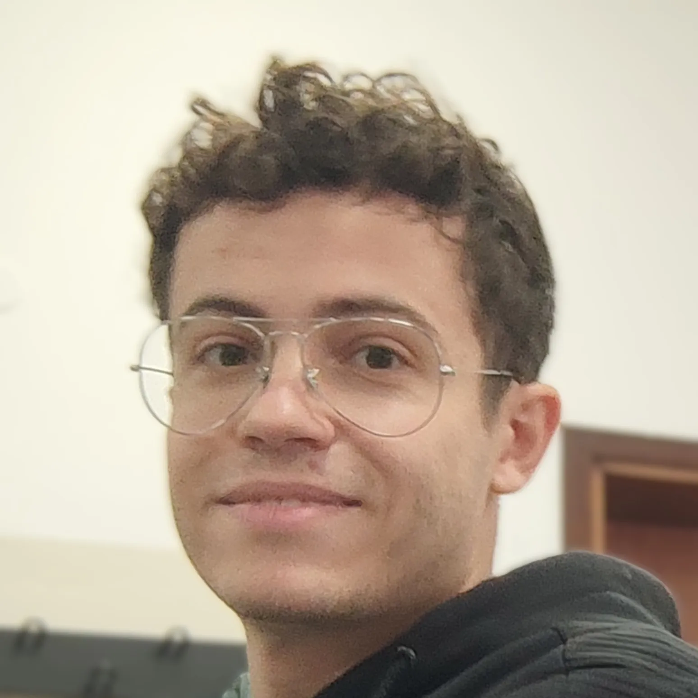

La nostra storia
A Padova, tra aule universitarie e sessioni di studio, Filippo³ ed Emanuele, quattro studenti di informatica con una grande passione per le auto, decisero di fondare LuzzAuto, un concessionario che unisce tradizione e modernità. Il loro obiettivo? Offrire servizi di vendita e noleggio auto che fossero accessibili, trasparenti e tecnologicamente all'avanguardia.

Da un sogno a una realtà
L'idea nacque durante una pausa caffè al bar universitario; "Abbiamo le competenze per costruire qualcosa di unico", disse uno dei Filippo. Gli altri concordarono: avrebbero creato un concessionario diverso, capace di offrire non solo auto nuove e usate, ma anche un servizio di noleggio semplice e veloce. Con un piccolo capitale iniziale e tanto entusiasmo, i ragazzi trovarono uno spazio nella periferia di Padova e iniziarono la loro avventura.

Cosa rende unica LuzzAuto
Grazie al loro background in informatica, Filippo³ ed Emanuele svilupparono un sistema digitale per semplificare l'esperienza dei clienti, offrendo inoltre un servizio online moderno e intuitivo. Sul loro sito, i clienti possono facilmente esplorare auto nuove, oppure scoprire un'ampia gamma di veicoli usati, sempre con informazioni chiare e dettagli trasparenti. Inoltre, grazie a una piattaforma di noleggio smart, è possibile prenotare un'auto per fare delle vere e proprie prove di guida, con pochi semplici click. Emanuele, con il suo carisma, si occupava delle trattative e del rapporto con i clienti, mentre Filippo³ gestiva la parte tecnica e organizzativa.

Padova al centro della mobilità
LuzzAuto divenne presto un punto di riferimento per la mobilità a Padova, rispondendo alle esigenze di studenti, professionisti e famiglie. Gli universitari apprezzano il servizio di noleggio economico, ideale per muoversi in città o affrontare viaggi occasionali. Anche i professionisti trovano nella piattaforma di noleggio un'opzione flessibile e conveniente per esigenze lavorative. Le famiglie, invece, si affidano al concessionario per acquistare auto affidabili, accompagnate da garanzie chiare e un servizio trasparente. Questo approccio inclusivo consolida il ruolo di LuzzAuto nella comunità locale.
Il futuro di LuzzAuto
Grazie al lavoro di squadra e all'innovazione, LuzzAuto continua a crescere, mantenendo il suo legame con Padova e la sua missione: rendere la mobilità più semplice e accessibile per tutti.
Un po' di numeri...
- Auto vendute
- Più di 8000
- Soddisfazione cliente
- 99%
- Anni di esperienza
- 3+
- Emissioni risparmiate
- Più di 2000 tonnellate di CO2 risparmiate
- Test drive
- Più di 50 test drive organizzati ogni mese
- Garanzia offerta
- Più di 5 anni di garanzia
Come raggiungerci
Non vedi l'ora di venire a trovarci? Passa da noi in Via Luigi Luzzati 8, 35137 - Padova
Orari
Siamo aperti dal lunedì al sabato, dalle alle . Domenica chiusi.
Info
Se hai bisogno di ulteriori informazioni, non esitare a contattarci all'indirizzo email concessionario.luzzauto@gmail.com(mail)
Ti aspettiamo per aiutarti a trovare il veicolo perfetto per te!
Il nostro Team
- Filippo Bellon
- Dotato di una mente analitica e di una grande passione per il lavoro di squadra, Filippo si dedica con entusiasmo allo studio dell'informatica. Con un particolare interesse per la sicurezza informatica, si impegna a imparare e crescere continuamente.
- Filippo Righetto
-  Con una forte curiosità per la tecnologia e l'innovazione, Filippo è sempre pronto ad affrontare nuove sfide per ampliare le sue competenze. Ha un interesse particolare per lo sviluppo software e sogna di contribuire a progetti che abbiano un impatto positivo.
- Filippo Diviesti
- Con un occhio attento ai dettagli e un grande entusiasmo per il problem solving, Filippo eccelle nell'analizzare e risolvere complessi problemi informatici. Nel tempo libero, ama esplorare nuovi linguaggi di programmazione e sviluppare progetti personali.
- Emanuele Artusi
- Curioso e creativo, Emanuele si distingue per la sua capacità di trovare soluzioni innovative ai problemi. È interessato al mondo dell'intelligenza artificiale e del machine learning, settori in cui spera di specializzarsi.